Creating a synthetic population, or in other words, enumerating a complete set of households and persons (with key attributes) for a modeling region is a necessary first step for the application of advanced travel models such as hybrid trip-based models and Activity Based Models (ABM).
The synthesized household and person characteristics reflect the distribution of key variables in the study region and match observed marginal distributions at an aggregate level.
Having access to detailed person and household characteristics in the model opens the door for model estimation to include a range of variables that define trip and travel making behavior. Even for traditional trip-based models, development of a synthetic population and household database can help generate various cross-tabulations at desired geographic levels that may not be available otherwise.
For the TRM, a population synthesis forms the core basis for applying a state-of-the-art hybrid travel demand model. The aim of the synthesis is focused on matching both household and person marginals at the Traffic Analysis Zone (TAZ) level. Another crucial requirement is a solution that is practical to apply and runs in minutes without sacrificing accuracy of the results. To that end, the updated population synthesis procedure in TransCAD 9.0 is employed.
This documentation briefly summarizes the basic idea of population synthesis, some of the advancements made in recent years and points the reader to published literature for additional details. The technical approach for population synthesis in the TRM is briefly illustrated, following details regarding the application. Finally, the results of the application are demonstrated.
The basic idea of population synthesis is best illustrated by Figure 1. In simple forms of population synthesis, there are two inputs: disaggregate household (HH) and person seed tables and HH marginals summarizing the distribution of key characteristics of HH at some aggregate level of geography.
The seed data tables consist of a sample of household (HH) and person records, typically obtained from a survey of the study region, and tagged to a high-level geography such as Public Use Microdata Areas (PUMAs). Public Use Microdata Sample (PUMS) data from the American Community Survey (ACS) typically forms this seed, although this sample can be enhanced by incorporating data from a travel survey and reweighing the combined records.
Various aggregate marginals, typically ACS marginals at the census block or block group level in the base year or sometimes at higher levels of geography for future years provide control totals that the synthesized databases must match. It is also a well-accepted practice to fir curves using the census marginal distributions, which can then be applied to generate marginals at a Traffic Analysis Zone (TAZ) level for example. These TAZs are usually smaller than census block groups but larger than census blocks.
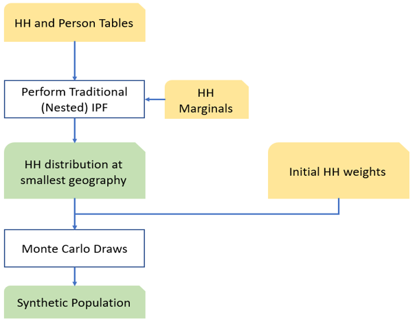
Figure 1 Simple population synthesis process flow diagram
An Iterative Proportional Fitting (IPF) step then estimates the number of each type of household (identified in the seed) to be generated for each of the smallest geographic entities. This is achieved by identifying the number of households of each type that will add up to various household marginals. This is best illustrated for a single block group using the schematic in Figure 2. In this example, the two classifications of interest are HH by Size and HH by Number of Vehicles. The row and column marginals highlighted in yellow are the input control totals and the goal of the process is to fill in the cells of the matrix (i.e. the values TS1_V0 etc.) such that the row and column totals are respected. The value TS1_V0 represent the number of single person, zero car HHs that need to be synthesized for this block group.
!(img/population_synthesis/de720c90d6dd29e992ba740f94bc604e.png)
Figure 2 IPF
The term “Nested” in Figure 1 indicates that the household marginals may themselves be specified at different (but nested) geographies: for example, the vehicle ownership marginals may be at the traffic analysis zone (TAZ) level while the income marginals may be at the level of Census blocks or block groups. Nested synthesis will drill all the marginals down to a common geography (usually the smallest/finest among all input geographies.
Finally, for each smallest geographic entity, the required number of households of each type determined by IPF are sampled or drawn from the surveyed (seed) households using externally supplied (initial) weights (generally based on the suvey sampling). The selected households are accumulated in a HH output file, and all persons living within each sampled household are automatically copied into an person output file. Together, the HH and person files comprise the synthetic population once the sampling is complete.
The most important drawback of this process is the lack of control on person marginals. Since the algorithm only controls for household variables, the obtained distribution of person attributes in any given zone is largely a lottery. There is no guarantee that the chosen households will yield, for instance, the correct distribution of age, gender, etc., in the synthetic population. This can have adverse effects from a modeling application perspective, for example if the distributions of working-age persons, students or seniors are incorrect.
The Iterative Proportional Updating (IPU) process (Xe et al, 2009) has been proposed and applied (most notably in PopGen) as a way of matching person marginals while essentially retaining the simplicity of the IPF framework. In this approach, before sampling households for a particular geographic entity (zone) using the initial weights in the seed, these sampling weights are first adjusted (or raked) to explicitly match both household and person marginals for the zone. In this process, note that the same seed household(s) may be weighted differently for different zones, which adds precision compared to the use of a priori weights supplied externally. Further, this household re-weighting may be applied at a different (usually more aggregate) geography than that used for simulating the population. A modified version of the published approach in the literature using IPU is applied to the TRM region and is discussed in detail in the next section.
Several optimization methods have also been published in the literature. For a general literature review, see Ramadan and Sisiopiku, 2019. While these methods might tackle certain issues of the IPU approach, these methods tend to be customized. Owing to the nonlinear and non-convex nature of the resulting formulation, the performance can be problem dependent and can result in long run times, local optima, and sensitivity to the scale of the objective function.
The population synthesis for TRM is based on an updated algorithm in TransCAD 9. While earlier versions of TransCAD did have a population synthesis procedure, it was based on basic IPF as illustrated in the previous section without explicit control of person marginals. The IPU based enhancements provide a natural framework for incorporating person marginals.
Figure 3 shows the general schematic of the IPU enhancement over IPF. Note the additional inserted steps which creates the loop. As mentioned earlier, the HH seed weights are adjusted for each zone to match HH and person marginals for that zone.
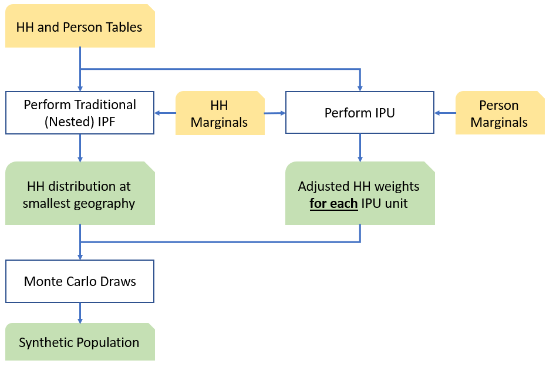
Figure 3: Population Synthesis with IPU
The weight adjustment for each zone is performed using an incidence table shown in Figure 4. The rows in the table are HHs from the seed database. This can include either all the HHs in the seed or only include those that belong to the parent geography (PUMA) of the zone. The latter is used in TransCAD.
The columns represent the various marginal categories. For each row (HH), the values in the corresponding column indicates which category the HH belongs to or how many people in the household belong to the category. For instance, assume one HH category with 2 marginal columns (HH Veh 0 and HH Veh 1+) and one person category with three age marginals, then the HH with ID 5 has 1+ vehicles and has three persons (two in age category 2 and one in age category 3). Multiplying the ‘HH Veh 0’ column vector (cell by cell) with a corresponding weight vector will yield the number of HHs with zero vehicles in the zone. This is indicated in the ‘Column Sum’ row. The ‘Marginals’ row consist of the target values for this zone.
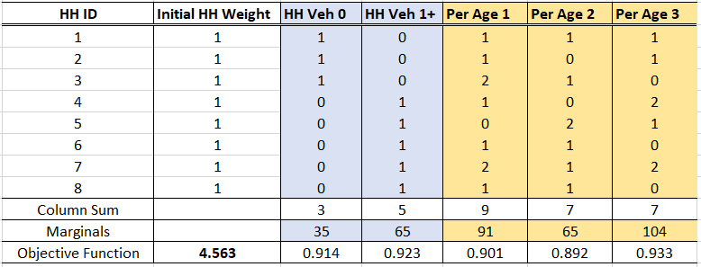
Figure 4: Incidence Table and IPU Adjustment
One iteration of the IPU consists of a complete set of column adjustments from left to right, one at a time. During each adjustment of the IPU, an adjustment factor is calculated as a simple ratio of the marginal total divided by the column total. This adjustment factor is used to multiply the current weight of all HHs that contributed to the total in the column. The weights of the other HHs are left unmodified.
For instance, the column sum for the first column is 3 whereas the desired marginal is 35. Thus, a factor of 35/3 = 11.67 is applied to the first three households that contributed totals to the first column. After the first column adjustment, HHs 1, 2 and 3 have a weight of 11.67 while the other HHs have a weight of 1. In the second iteration, the column sum (using the current weights is 5) and the marginal is 65. Thus, the adjustment factor of 13 (=65/5) is used to multiply the weights of the last five HHs to bring them up to 13. After this adjustment, HHs 1 to 3 still have a weight of 11.67 as they did not contribute to the second column sum. This mechanism is repeated for one column at a time.
Once a single iteration across all the columns is complete, an objective function is calculated and checked for convergence. The objective function calculations are general and can take many forms. For example, the fit \(\delta_{j}\) for column \(j\) may be computed as:
\[\delta_{j} = \frac{\sum_{i}^{}\left\lbrack w_{i}d_{\text{ij}} \right\rbrack - m_{j}}{m_{j}}\]
where \(w_{i}\) is the weight of household \(i\); \(d_{\text{ij}}\) is the contribution of household \(i\) to column \(j\); and \(m_{j}\) is the marginal for column \(j\). The overall objective function \(\delta\) could then be expressed as:
\[ \begin{matrix} \delta = \sum_{j}^{}\left( \delta_{j} \right)^{2} \end{matrix} \]
In the incidence table above, \(\delta = (3 - 35)/35\) for the first column and its absolute value is 0.914. After obtaining the \(\delta\) values for each column, the second equation then can be used to determine the objective function as 4.563.
The adjustment continues from left to right starting at the first column if the desired convergence metric has not been achieved.
The originally published IPU method in the literature was implemented in the PopGen software. In this original IPU algorithm, two separate IPFs are run, one on the HH marginals and one on the person marginals. The results of the second IPF on the person marginals are used to populate detailed person-level columns in the incidence table that specify the full, joint distribution of person
attributes. So, if there are multiple marginals to match such as HHs by Size (1,2,3,4+), number of vehicles (0,1,2,3+) and number of workers (1,2,3,4+) and Persons by Age (assume 5 categories) and Gender, then the incidence table has 64 HH columns, one for each combination of size, vehicles and workers and 10 person columns, one for each age category and gender combination. Since only one-dimensional marginals are typically known, the marginal values in the incidence tables come from the IPF run and the second IPF must be performed on the person characteristics to populate the person columns.
This version of IPU has several drawbacks. One, the process is slow, especially if there are a lot of marginals and the process can take hours. Second, the solution introduces a couple of other issues that must be dealt with and these issues have garnered significant attention in literature. One of these issues is a zero-cell problem, where the seed data is stretched thin and certain combinations may not be present in the seed. The second issue is a zero-marginal problem, but this can be solved by replacing the zero in the marginal row with epsilon values. There are several techniques to address these issues, which have been implemented in PopGen, but addressing these issues adds further runtime.
In the TransCAD approach, for want of minimizing these issues and at the behest of maintaining fast run times, only the one-dimensional marginals are used to form the incidence table. Thus, in the hypothetical example, the incidence table has 12 HH columns (as opposed to 64) and 7 person columns (as opposed to 10).
The enhanced TransCAD IPU method has been previously applied successfully for the Las Vegas RTC model as well as the California Central Coast ABM model. In both cases, not only was the match to the one-dimensional marginals (especially the persons) very close but the joint distribution observed from the synthesis were also very reasonable. These applications take a fraction of time compared to that reported on similar sized problems with the original IPU method or optimization methods.
The next few sections discuss the application of the procedure to TRM and the results.
For the TRM region, several marginals have been synthesized at the zone layer. These marginals at the HH level include:
HHs by Size (1, 2, 3 and 4+)
HHs by number of workers (0, 1, 2 and 3+)
HHs by Income
Low [0, 35000)
Medium Low [35000, 75000)
Medium High [75000, 150000)
High 150000+
Several disaggregate curves developed from the ACS 2014-2018 data are used to obtain these marginals from zonal average values which are more easily supplied for future scenarios than full distributions. The curves determine the respective marginal splits based on average HH size, ratio of TAZ income to regional TAZ income and average number of workers in the TAZ.
Person marginals matched include
Persons by Age Group
Children [0, 18)
Adults under 65 [18, 65)
Seniors [65, 130)
The zone socio economic data contains derived percentages of kids, adults under 65 and seniors (from ACS data). These are used to compute the three age classifications above that serve as person marginals.
The seed HH and person data come from ACS PUMS that have 45,825 and 110,146 records respectively. The seed data has the necessary fields to generate indicators for the various dimensions being matched using the fields NP (Number of persons in the HH), HHINC and ADJINC (to compute the income classification) in the HH database; and the fields Age and ESR (Employment Status) in the person database to compute the age classification and the number of workers in the HH.
There are 18 PUMA zones in the TRM region and Figure 5 highlights some key data. The TAZ boundaries are shown in green and the colored areas are the PUMA zones.
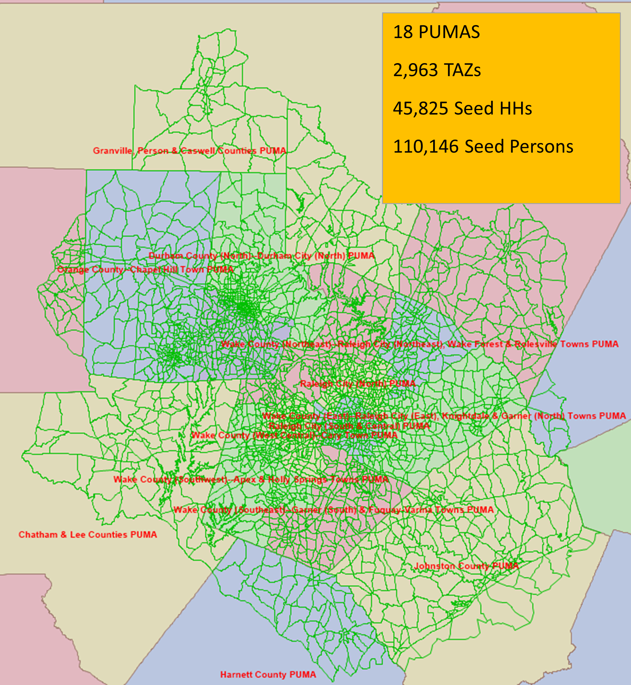
Figure 5: PUMAs in the TRM region
The running time of the entire population synthesis for the TRM (with the IPU) is 2 minutes. These running times represent a small fraction of running times reported for similar problems in the literature.
The population synthesis on TRM generates 731,913 HHs and 1,783,548 persons. The number of HHs in the SED data is 731,875 and the population in households is 1,826,973. The percentage errors are 0.005% on the HHs and 2.38% on the overall population.
The fit to various marginals is illustrated in the following charts. The input SED marginals (by TAZ) are on the x-axis while the synthesized marginals (aggregated to TAZ) are plotted on the y-axis. Each graph also includes the regression line equation, R-squared and the percent RMSE.
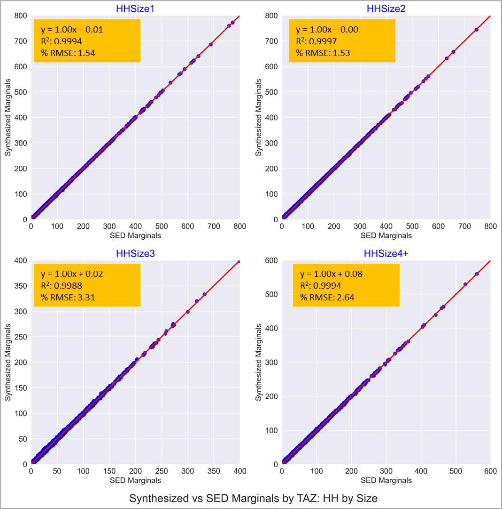
Figure 6: Comparison of HH Size Marginals
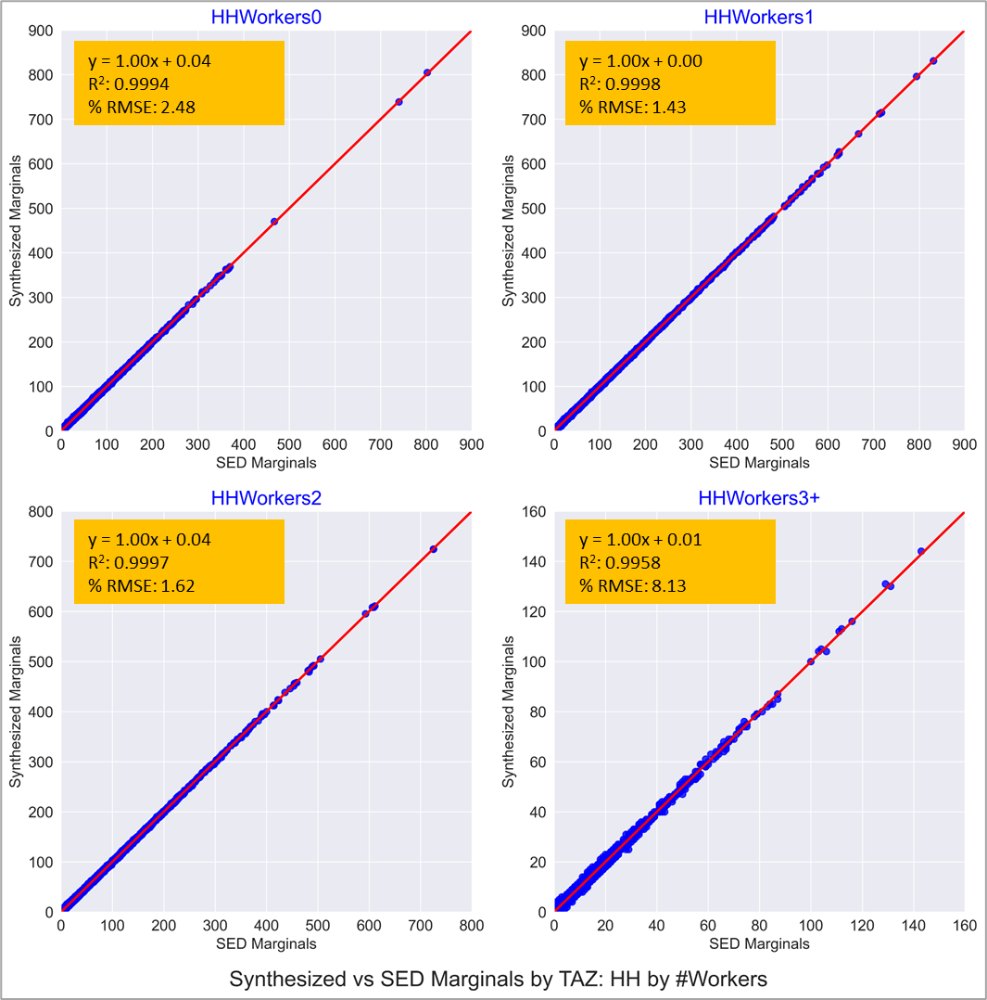
Figure 7: Comparison of HH Workers Marginals
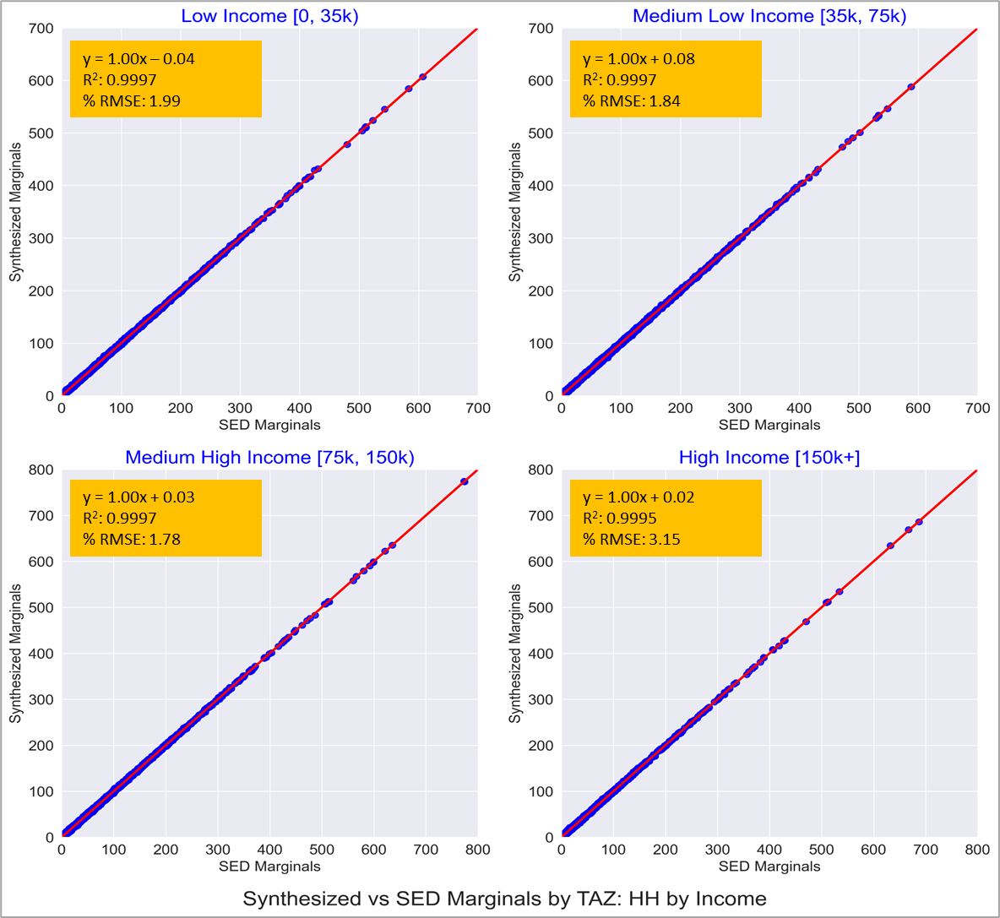
Figure 8: Comparison of HH Income Marginals
As expected, the fit to the HH marginals shown in Figures 6, 7 and 8 are pretty much spot on. This is testament to the IPF procedure having converged successfully.
The subsequent charts show fit to person marginals. Figures 9 and 10 show fit to total HH population and the fit to total number of workers. Since the HH marginals match HH by size and HH by number of workers, these charts are also expected to show a great fit.
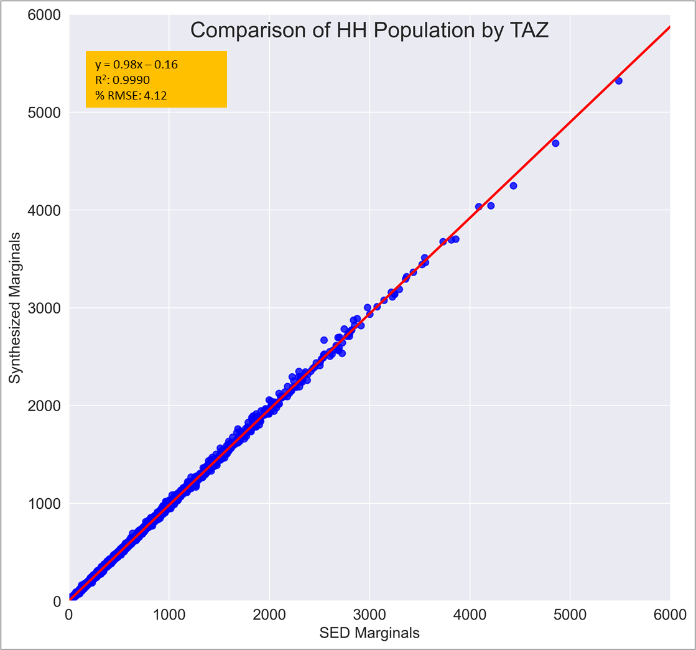
Figure 8: Comparison of total HH population
Figure 9: Comparison of workers
Note that for a run without the IPU option, the fit to the marginals in Figures 6 to 9 are pretty similar.
Figures 10 to 12 show the fit of population in three age categories. Unlike the previous figures, the incorporation of the IPU here makes a significant difference. In these graphs, the orange line and the orange points represent the fit of the TRM population synthesis with the IPU option enabled. The blue line and the blue points represent the fit of a similar population synthesis without the IPU options. These graphs are produced to illustrate both the good fit of the final TRM synthesis and illustrate the efficacy of the IPU.
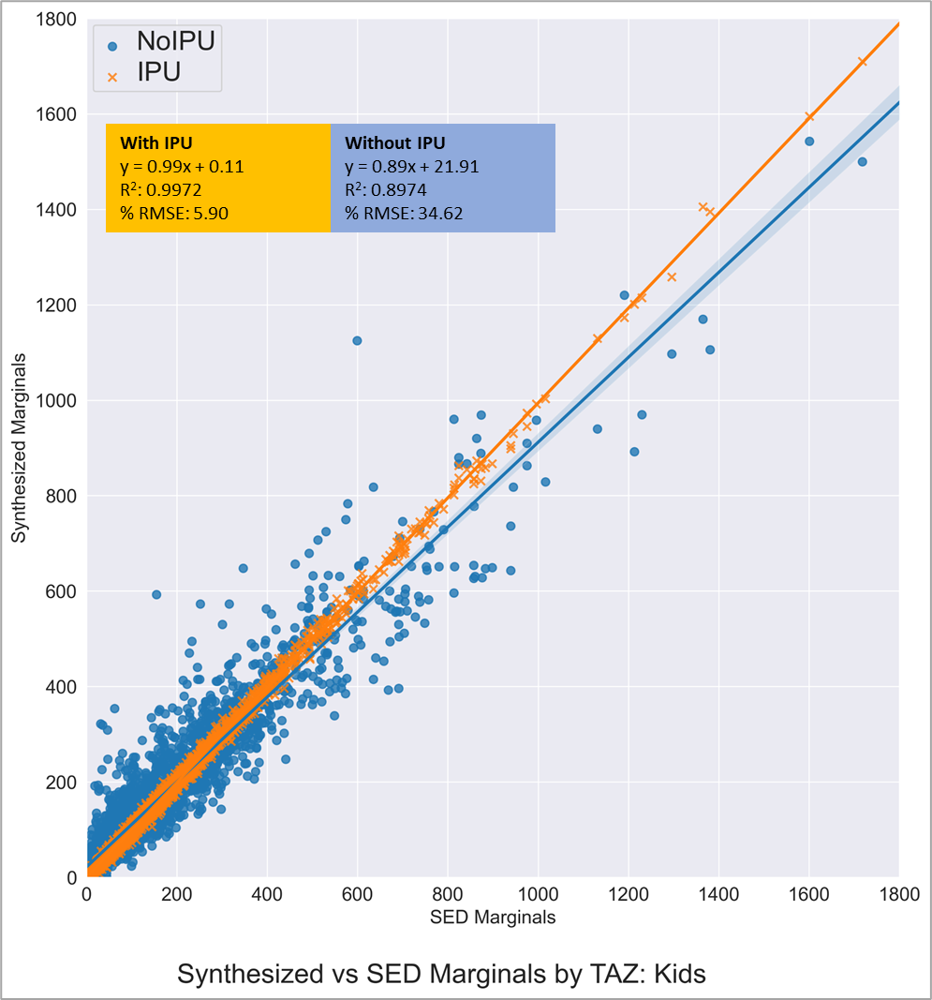
Figure 10: Comparison of Number of Kids (IPU vs Non-IPU)
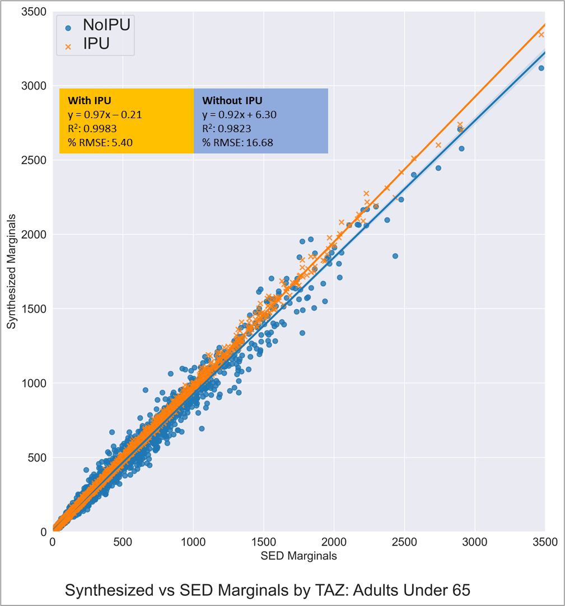
Figure 11: Comparison of Adults Under 65 (IPU vs Non-IPU)
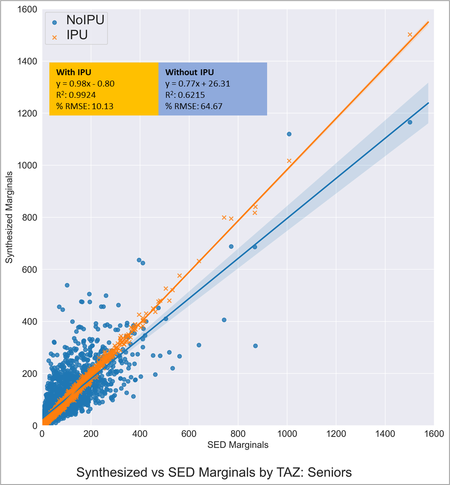
Figure 12: Comparison of Seniors (IPU vs Non-IPU)
The updated population synthesis for the TRM is based on TransCAD 9’s synthesis, which is a variant of the population synthesis with IPU published in the literature. The marginals are at the TAZ level are derived by fitting curves on the ACS 2014-2018 data. The ACS PUMS for these years form the seed databases for the synthesis procedure. The marginals matched include HH by Size, HH by Number of Workers, HH by Income Group and Persons by Age. The population synthesis is extremely fast with a run time of 2 minutes and the fit to the marginals is great. The resulting synthesis is demonstrative of the person and HH characteristic distribution in the TRM region and can be confidently used in the application of the state-of-the-art hybrid model for the Triangle Region.
Balakrishna, R., S. Sundaram and J. Lam. An Enhanced and Efficient Population Synthesis Approach to Support Advanced Travel Demand Models. Presented at the 99th TRB Annual Meeting.
Ye., X., K. Konduri, R.M. Pendyala, B. Sana and P. Waddell. A methodology to match distributions of both household and person attributes in the generation of synthetic populations. Presented at the TRB annual meeting, 2009.
Ramadan, O.E., and V.P. Sisiopiku. A Critical Review on Population Synthesis for Activity- and Agent-Based Transportation Models. Transportation Systems Analysis and Assessment, IntechOpen, 2019.
Caliper Corporation, 2021